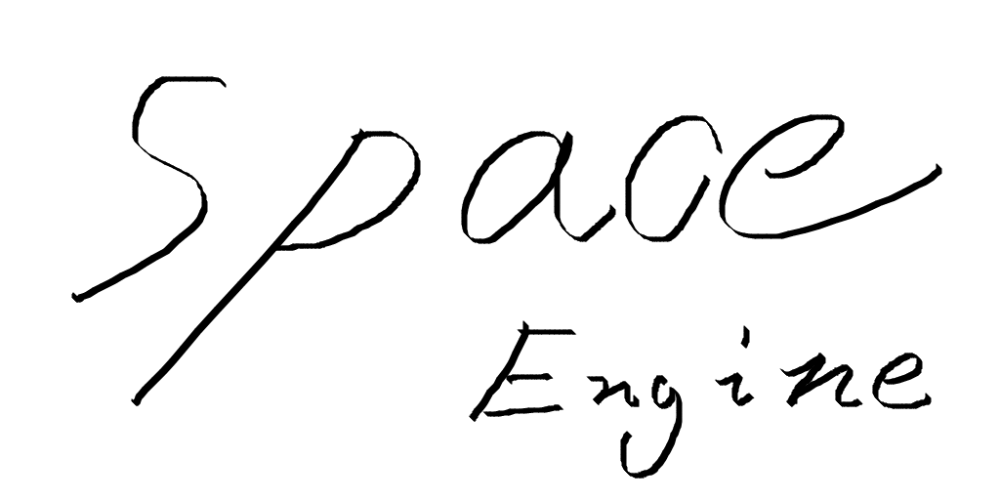

Space Engine Helper

object
物体基本单元
1.void init(LPDIRECT3DDEVICE9 g_pd3dDevice,int VertexSize,int IndexSize,CUSTOMVERTEX Vertices[],WORD Indices[]);
作用：使用g_pd3dDevice来初始化一个物体对象，
" 它的顶点数是VertexSize。"
" 它的索引数是IndexSize。"
" 顶点数组是Vertices。"
" 索引数组是Indices。"
用法：作用中有!!!